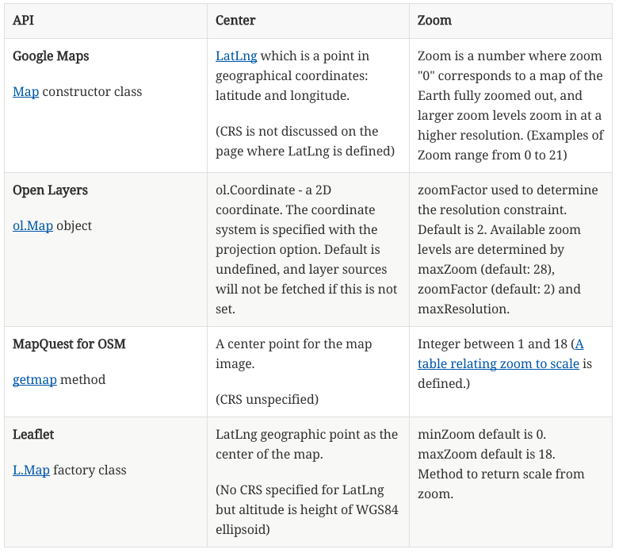
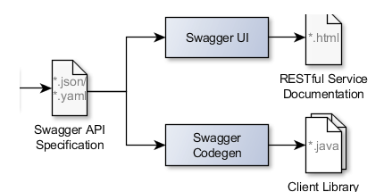

OGC® Open Geospatial APIs - White Paper
OGC Document 16-019r4
External identifier of this OGC® document: TBD
URL for this OGC® document: TBD
Internal reference number of this OGC® document: OGC 16-019r4
Version:
Category: OGC® White Paper
Editor: George Percivall
Previous Version:
Publication Date: 2016-TBD
Approval Date: 2016-TBD
Submission Date:
Copyright © 2016 Open Geospatial Consortium.
To obtain additional rights of use, visit http://www.opengeospatial.org/legal/
Warning
This document is not an OGC Standard. This document is an OGC White Paper and is therefore not an official position of the OGC membership. It is distributed for review and comment. It is subject to change without notice and may not be referred to as an OGC Standard. Further, an OGC White Paper should not be referenced as required or mandatory technology in procurements
Document type: OGC® White Paper
Document stage: Prepared for review at OGC TC December 2016
Document language: English
Preface
OGC defines interfaces that enable interoperability of geospatial applications. API’s are a popular method to implement interfaces for accessing spatial data. This White Paper provides a discussion of Application Programming Interfaces (APIs) to support discussion of possible actions in the Open Geospatial Consortium (OGC).
-
Chapter 1 – What is an API?
-
Chapter 2 - Need for Interoperability across APIs
-
Chapter 3 – API Design using Open Standards
-
Chapter 4 – OGC API Essentials
-
Chapter 5 – Open Standards and APIs
Annexes are provided on these topics:
-
A. Examples of Web Mapping APIs
-
B. Web APIs for Environmental Data - CSIRO Report
-
C. The Open API Initiative and Specification
-
D. APIs and implementation independence
-
E. Open APIs and Licensing
The main themes of paper are:
-
APIs are popular because they are an effective method for rapid software development in particular for distributed systems. Examples of successful geospatial mapping APIs are listed in Annex A: Google Maps, OpenLayers, MapQuest API for OpenStreetMap, Leaflet, Esri ArcGIS REST and Mapbox
-
The proliferation of API variations degrade interoperability defined by web protocols. The examples in Annex A show such variations in several parameters including "Zoom" level. A summary of the differences of Zoom is provided in Chapter 2, Table 1 - Comparison of Map-related attributes from several APIs.
-
Protocols provide interoperability when implemented consistently across APIs. The OGC WMTS protocol when implemented across multiple APIs enables interoperability as demonstrated in the Figure at the end of Chapter 2. By using consistently using the WMTS TileMatrixSet, graphics returned from several APIs can provide a consistent, composite map. Similarly consistent use of OGC Essentials will improve interoperability (See Chapter 4).
-
API implementation experience should be used to improve the OGC Web Service Protocols. Several RESTful approaches for defining OWS protocols based on resource types are being considered in OGC. Further, this white paper recommends that OGC consider activities that provide for consistent implementation of OWS protocols across multiple APIs (See in particular Chapters 3 and 4).
Keywords
ogcdoc, OGC documents, api, protocol, interoperabiity, standards
Submitters of this document
All questions regarding this white paper should be directed to the editor or the submitters:
| Name | Affiliation |
|---|---|
Chris Holmes |
Planet Labs |
Dave Wesloh |
NGA |
Chuck Heazel |
WiSC Enterprises |
Gary Gale |
What 3 Words |
Arnulf Christl |
Metaspatial |
Josh Lieberman |
Tumbling Walls |
Carl Reed |
Carl Reed and Associates |
John Herring |
Oracle |
Martin Desruisseaux |
Geomatys |
David Blodgett |
USGS |
Scott Simmons |
OGC |
Bart de Lathower |
OGC |
George Percivall |
OGC |
Table of Contents
- 1. What is an API?
- 2. Need for Interoperability across APIs
- 3. Geospatial API design based on open standards
- 4. OGC API Essentials
- 5. Open Standards and APIs.
- Appendix A: Web Mapping API examples
- Appendix B: Web APIs for Environmental Data - a Report from CSIRO
- Appendix C: The Open API Initiative and Specification
- Appendix D: APIs and implementation independence
- Appendix E: Open APIs and Licensing
1. What is an API?
1.1. API defined
This chapter discusses software engineering definitions for APIs.
API (Application Programming Interface) - An interface that is defined in terms of a set of functions and procedures, and enables a program to gain access to facilities within an application. (Definition from Dictionary of Computer Science - Oxford Quick Reference, 2016)
Interface - a shared boundary between two functional units, defined by various characteristics pertaining to the functions, physical interconnections, signal exchanges, and other characteristics, as appropriate (Definition from ISO/IEC 2382:2015 Information technology - Vocabulary)
The value of APIs is to provide well-known interfaces between components of a software system. APIs are useful in software development as they support modularity. Well defined interfaces allow separation of functionality into independent, interchangeable modules. APIs are often materialized as web-services, but are also commonly targeted at a specific programming language, typically Javascript.
APIs are popular today as they allow an organization to publize their APIs for reuse. Public APIs enable developers from other organizations to access the functionality provided behind the APIs. APIs are closely related to role of "platforms". For example the Facebook API provides functionality used by multiple organizations thereby advancing the market value of the Facebook platform. APIs may promote “stickiness” and "lock-in" to a platform.
Public APIs may or may not be Open APIs.
Being "public" means that the API is visible and accessible outside of the organization that owns the API.
The organization that controls and promotes the API owns the API.
Open APIs are similar to open standards in that Open APIs are managed as a public good and managed in an open process.
Open APIs adhere to open principles such as those defined by OpenStand:
1. Cooperation,
2. Adherence to Principles (including broad consensus),
3. Collective Empowerment,
4. Availability, and
5. Voluntary Adoption.
OGC standards go beyond OpenStand principles as all OGC standards are free to download and are royalty-free. (See Chapter 5 for more on the meaning and values of "Open".)
1.2. APIs in context
APIs are tools used by software engineers and developers to design modular and interoperable systems. From an OGC open standards perspective, APIs are understood in the context of requirement specifications and implementing code.
Figure 1. APIs in Context
Requirements Specifications are documents that define aspects of a protocol or data model to solve an interoperability problem. A protocol is the set of requirements that end points in a distributed system use when they communicate. The requirements may be written in plain text or in a technology neutral modeling language like UML. Web Protocol specifications include http structures that can be directly used in APIs. OGC standards specify requirements for interfaces and encodings using a modular approach (OGC 08-131r3). Implementations of an OGC standard must satisfy requirements as demonstrated by passing conformance tests. The requirements in a specification can apply across multiple API implementations.
APIs are interfaces that when backed by implementing code satisfy an interoperability need that may be documented in a Requirements Specification. The API package is a set of structure, function and procedure protocol definitions written in declarative statements that enables a program to access an application package containing implementations for these functions and procedures using these protocols. For bindings in most programming languages (C++, JAVA and other Object Oriented languages) the declarative code can be initially generated from UML defining the abstract API, using Model Drive Architecture (MDA) to produce the appropriate protocols. Implementations may use any procedures they deem appropriate as long at the functional requirements of the original specification are upheld.
Applications are software programs accessible by an API that meet user needs. Applications are distinct from system software including the operating system and system utilities. Applications implement algorithms to provide functionality behind APIs. The particulars of the algorithm are distinct from the protocols. A development strategy is to implement methods in the simplest manner possible and then do system testing and measurement to identify performance issues to optimize code, which is usually an algorithmic issue and independent of the protocol definitions.
1.3. Diversity of APIs
The application programming interface (API) entry on Wikipedia defines API as an interface that supports modularity and separation of components. The components can be implemented independently with the API serving as the common point of exchange. It is the notion of "API as an Interface" that makes it relevant to the activities of the OGC.
As defined in OGC® Testbed 11 REST Interface Engineering Report, OGC Document 15-052r1, an API is an interface definition that permits invoking services from application programs without knowing details of their internal implementation.
The OGC APIs listed next show the diversity of the API concept while still retaining the core concept that "APIs are interfaces."
1.3.1. OGC GeoAPI Standard
The OGC GeoAPI standard provides a set of Java language programming interfaces for geospatial applications. The GeoAPI interfaces closely follow the abstract model and concrete specifications published collaboratively by the International Organization for Standardization (ISO) in its 19100 series of documents and the Open Geospatial Consortium (OGC) in its abstract and implementation standards.
The GeoAPI interfaces provide a layer which separates client code from application code, which implements the API. This follows a similar pattern to the well-known JDBC API which provides a standardized interface to databases. Clients can use the JDBC API without concern for the particular implementation which they will use. Various groups have implemented different subsets of GeoAPI, see the list of known implementations for details.
1.3.2. OGC SensorThings API
The OGC SensorThings API provides an open, geospatial-enabled and unified way to interconnect the Internet of Things (IoT) devices, data, and applications over the Web. At a high level the OGC SensorThings API provides two main functionalities and each function is handled by a part. The two parts are the Sensing part and the Tasking part. The Sensing part provides a standard way to manage and retrieve observations and metadata from heterogeneous IoT sensor systems. The Tasking part is planned as a future work activity and will be defined in a separate document as the Part II of the SensorThings API.
The SensorThings API part 1 identifies resources as entities that are relevant to IoT Sensing, e.g., Thing, Observation, Location, Sensor. SensorThings API then grounds entities into entity sets and identifies URI components for requesting CRUD actions on those resources. The CRUD actions are specified using the HTTP protocol as well as MQTT protocol. MQTT is used to enhance the SensorThings service publish and subscribe capabilities. SensorThings API follows OData’s specification for requesting entities. However, SensorThings API does not follow the OData Common Schema Definition Language and should not be seen as an OData compliant API. SensorThings API’s future work will explore possible harmonization between SensorThings API and OData.
1.3.3. OGC NetCDF Standard
The OGC netCDF Standard is a set of data formats that support the creation, access, and sharing of array-oriented scientific data. The netCDF data model and encodings are particularly well suited to providing data in forms familiar to atmospheric and oceanic scientists.
Related to the data model and encodings listed in the netCDF standard are a set of APIs. Considering the popularity of the netCDF APIs they may be included in future extensions of the OGC netCDF standard. Bindings for C, Fortran, C++, Java are described in the CF-netCDF Core and Extensions Primer.
1.3.4. APIs and the Web - WebAPIs
The Web follows the Internet approach of Protocol-Based Interoperability where the protocols specify the syntax, semantics, and sequencing constraints of the messages interchanged. Protocols designed to be resilient in the face of widely varying environments have helped the Web scale and have facilitated communication across multiple trust boundaries. Traditional APIs do not always take these constraints into account. One effect of protocol-based design is that the technology shared among components often lasts longer than the components themselves. To support Web development the concept of a WebAPI was defined. A WebAPI is an API for either a web server or a web browser.

Figure 2. WebAPIs
OGC Protocols for WebAPIs
OGC Web Service (OWS) Standards define Protocols that can be implemented as WebAPIs. The OWS standards are Requirements Specifications that define a protocol and in some cases a data model. The OWS standards include WMS, WMTS, WFS, WCS, WPS, WCPS, SOS, SPS, CSW, and OpenLS.
The OWS standards define requirements to be satisfied by both client-side and server-side WebAPIs. The OWS standards as currently written do not specify the declarative statements needed for an API package. The OWS standards do not specify API design rather they specify protocols that provide requirements for APIs. Multiple APIs with differing designs can satisfy the OWS requirements (See Section 2 Web Mapping examples for further discussion).
The OWS standards are the basis for OGC Conformance Tests that are used to confirm that functional requirements are met by implementations. OGC Compliance Tests have predominantly focused on server-side testing, while more recently client-side compliance tests have been defined for WMS.
REST Architecture for OGC Web Services
REST (Representational State Transfer) is a term coined by Roy Fielding in his doctoral dissertation to describe an architectural style for “distributed hypermedia systems” such as the Worldwide Web that are to have desirable characteristics including separation of concerns, scalability, resiliency, visibility, and reliability. The REST architectural style rests on five constraints on how computing systems are configured and component interactions are carried out (see for example A RESTful Tutorial). Examples of non-open standard RESTful web mapping APIs are provided in Appendix A.
OGC Web Services (OWS) were defined before the publication of REST principles. OGC has evaluated the implications of REST vis-a-vis OWS finding that the existing OWS Standards have aspects of REST but also that OGC services should be migrated to, or at least make available as more RESTful bindings. For example, The OGC Testbed 11 REST Interface Engineering Report defines possible uniform practices for developing bindings or interaction styles for OGC Web services that appropriately leverage REST principles. OGC Testbed 12 continues these developments and will conclude late in 2016.
2. Need for Interoperability across APIs
2.1. The Proliferation of Public APIs
This Chapter considers the variation in existing geospatial APIs as the motivation for proposing API design based on open standards. The objective is to promote wide spread interoperability based on open API design while maintaining competitive opportunities.
There are many public APIs. As of November 2016,
The Programmable Web listed over 16,000 public APIs. (See Chapter 5 for distinction between public and open.) Richardson identified challenges with the proliferation of APIs including
-
"Thousands of APIs are superficially similar but mutually incompatible
-
Everyone has a slightly different view of basic real-world concepts like “person” and “event”
-
This lack of agreement makes it impossible to create client-side software that can be reused between APIs
-
It’s not hard to find two APIs that do exactly the same thing but have nothing in common except the application/json media type."
The recent proliferation of APIs for geospatial applications has degraded the interoperability previously established by open standards. This degradation is do both to the variability of API practices across the IT industry as well as variability in geospatial APIs specifically.
Advancements in API practices is needed across the software development profession. "APIs are often difficult to use, and programmers at all levels, from novices to experts, repeatedly spend significant time learning new APIs. APIs are also often used incorrectly, resulting in bugs and sometimes significant security problems." ("Improving API Usability" in the Communications of the ACM)
2.2. Example variations in Web Mapping APIs
Web mapping APIs define interfaces and bindings to access maps over the web. This section provides examples of variation across existing geospatial APIs to demonstrate the need for improved API design practices. While web mapping APIs are defined in multiple programming languages, the examples in this chapter focus on JavaScript.
APIs for web mapping were listed in The Programmable Web with the "top ten" being: Google Maps, Microsoft Bing Maps, OpenLayers, Foursquare, OpenStreetMap, MapQuest, Mapbox, CartoDB, Esri, and Yahoo. Some of these APIs implement the WMS Protocol either explicitly or as an extension - others do not support WMS, defining their own semantics and syntax for web mapping.
Annex A lists details and code snippets for these Web Mapping API examples: Google Maps, OpenLayers, MapQuest API for OpenStreetMap, Leaflet. Additionally two more RESTful examples are listed in Annex A: Esri ArcGIS REST and Mapbox.
The Web Mapping APIs listed in the Annex A use similar concepts sometimes in attributes differing names. The Table below lists two such attributes - "Center" and "Zoom" - that are in the four example APIs. "Center" is the center point of the web map to be displayed. "Zoom" is related to the scale of the web map to be displayed. The concepts for these attributes are similar in each API but the precise specification is different in each case.
The variability of similar concepts across different APIs as seen in Table 1 suggests an opportunity to quickly converge on a small set of "essential" attributes usable across otherwise disparate APIs. This simple example motivates the discussion about geospatial domain mapping and OGC Essentials for geospatial APIs based on open standards.
Table. Comparison of Map-related attributes from several APIs

2.3. Interoperability across Multiple Map Servers
Interoperability is a primary objective of the OGC. Consistent semantics across multiple servers independent of underlying API leads to interoperability and the ability to merge results from the multiple servers. The figure below was created by making individual requests to several map services (the text in each “square” indicates the name of the server). The figure illustrates what can be done if services use the same indexing systems. The figure uses the “indexing system” defined in the WMTS Simple.

Figure 3. Multiple Maps with common semantics - Interoperablity (Source: Joan Maso)
3. Geospatial API design based on open standards
To address the challenges of API proliferation addressed in Chapter 2, this Chapter identifies several methods based on open standards for the design of Geospatial APIs based on open Requirement Specifications.
These topics are addressed in the following sections for this Chapter:
-
Modeling the geospatial domain
-
API design based on geospatial requirements
-
API Specification and Management
-
OGC Essentials for API elements
-
Managing multiple API Bindings
-
Layered API design
-
API Security Patterns
The Figure below provides a summary of the topics discussed above Geospatial API Design using open standards.

The following sections includes Recommendations from "Web APIs for Environmental Data", a report from CSIRO (See Annex B). The CSIRO report provides Recommendations as a basis to design consistent, cross-organization APIs for access to a range of environmental data products. Observations from the CSIRO report and listed in this Chapter provide examples of opportunities for improving geospatial API design.
3.1. Modeling Geospatial Domain Resources
Designing for a connected set of concepts will lead to more robust interactions with domain resources, long term evolvability and fitness for use (Spec Driven Development). Design should consider an interconnected set of API resources with clear ideas and support of why and how API consumers will follow certain paths. This supports the objective that APIs may not just compete by features, but also by how easily and robustly they can be used ( API Maps: Hypermedia API Design)
The CSIRO API Report (Annex B) makes the following observations about modeling the environmental data domain.
-
Observation 18: Involve domain specialists in resource design. In organizations as complex as multi-disciplinary environmental agencies, there won’t be a single information model or Web API to rule them all. Rather there exists multiple domain contexts and words with different meaning, e.g. what is a monitoring station? Any domain-level simplifications should be reviewed within these contexts to ensure they make sense.
-
Observation 19: Consider point, grid and trajectory abstractions. This has been used effectively in existing APIs as a way of delineating different data types.
Multiple map APIs designed with a consistent domain model will improve development using multiple APIs, e.g., a developer can use an open API to draw the map, open map data from multiple sources in combination with commercial APIs say for advanced features such as traffic or routing. Capturing the geospatial domain in open Requirements Specifications provides for achieving such domain interoperability.
One aspect of this analysis is the use of Landing Pages to document APIs. The advent of distributed Hypermedia, in particular the World Wide Web, has introduced a new pattern of distributed processing. In this pattern, users follow links from one resource to the next. Each resource provides the information needed to proceed to the next set of resources. This pattern assumes a simple protocol (URLs over HTTP). Landing Pages are an emerging approach to document an API using this pattern. A landing page is a collection of web pages which document the API. The web pages also include URLs which can be accessed using the HTTP protocol to exercise the advertised capabilities. Two examples of landing page APIs are: John Deere and Twitter
3.2. API design based on geospatial requirements
As discussed in Chapter 1, Requirements Specifications define protocols and schemas for interoperability across distributed heterogeneous distributed information systems. APIs that implement the Requirement Specifications support such interoperability.
The OGC Web Service (OWS) Standards are requirements specifications that define geospatial interoperability. The OWS Standards define data structures, behaviors and semantics for protocols based on http. The OWS Standards were initially defined based on a Service Oriented Architecture (SOA). The OGC Web Map Service was defined with a service interface including multiple operations, e.g., GetMap. OGC is currently reviewing the OWS Standards in a discussion will lead to addition of more RESTful protocols based on a Resource-Oriented Architecture (ROA). (See OGC Testbed 11 REST Interface Engineering Report)
Consistent with ROA and supportive of RESTful APIs, geospatial resources need to be identified in OGC standards. Geospatial resources include: feature collection, feature, coverage, map, layer, trajectory, etc. Relationships are also important to be modeled, e.g. topological associations between features, parent-child associations, etc.
Based on identification of geospatial resources RESTful protocol signatures are being defined for OWS standards. For example:
http://ows.example.org/dataset/ows/featurecollection/featureID http://ows.example.org/dataset/ows/coverage/AvgLandTemp
An example defining a relation between a requirements specification and implementing APIs is available in these two standards from the Intelligent Transport Systems (ITS) Domain:
-
Unified gateway protocol requirements and specification for vehicle-ITS-station gateway (V-ITS- SG) interface (ISO 13185-2)
-
Unified vehicle interface protocol (UVIP) server and client API specification (ISO 13185-3)
Corresponding to services defined in ISO 13185-2, the UVIP Java Client API (ISO 13185-3) contains services that can be called by any application to execute a service. A UVIP Client Application communicates with a UVIP Server Application.
Resources, protocols, semantics and behaviors defined in Geospatial Requirement Specifications become the basis for API Specification and Management.
3.3. API Specification and Management
API specification and management are crucial software engineering functions for any organization using information technology. As the popularity of APIs has grown in the past few years, so too have the tools, best practices and consulting services that support organizations in API specification and management. While these tools were initially developed for organizations to manage their organization-specific APIs, the tools can also be considered for use in API design in an open standards context. Here we consider one such tool: the Open API Specification formerly known as the Swagger specification.
Documenting APIs can be aided by using the approach of the OpenAPI Initiative (OAI). OAI is focused on defining a vendor neutral API Description Format based on the Open API Specification (OAS). The approach will allow specification of REST APIs using modular sub-elements. Sub-elements can then live on their own and be shared by multiple APIs. More information about OAI and OAS is available in Annex C.
Providing complete documentation of your API using OpenAPI is a W3C Data on the Web Best Practice. This best practice for APIs is being discussed in the OGC/W3C Spatial Data on the Web Working Group.
Swagger was used in the OGC WaterML2.0 part 2 Interoperability Experiment to document the CSIRO RESTful API. The CSIRO API Report (Annex B) makes the following observations:
-
Observation 9: Make use of automated API documentation where possible. These can often be synched directly with an implementation version, which helps to minimize divergence. Some also provide interactive (e.g. Swagger) documentation that allows inline requests to be made. This helps to lower the barrier of entry for developers and quickly builds understanding.
-
Observation 10: Avoid bleeding edge API description languages and response patterns. There has been an explosion in the number of these. Picking a winner is difficult. Using an overly complex, non-supported service description framework and/or response structure can be an impediment to developers.
An advantage of documenting APIs with OAS is the industry-wide tools and practices that are based on OAS. The first Figure below shows how OAS enables robust management of software development lifecycle activities. The second figure below shows the automated generation of client libraries based on code generation tools. Use of OAS also helps organizations with API response types, including error handling, link updates, moved and re-aggregated resources, etc.

Figure 4. The OpenAPI Specification offers a simple format for writing REST service contracts

Figure 5. OAS/Swagger API specification based tools
The CSIRO API report (Annex B) describes the OpenAPI Specification as a set of tools and services that help API developers generate documentation for APIs. The Swagger UI renders a documentation page that provides full description of endpoints, with in-line forms allowing test calls to be made to services. The UI can be generated from an API specification document, which could be handwritten or generated from a service.
The specification of a service is done using JSON or YAML that follows the Swagger specification schema. A JSON Schema is available to validate specification documents. The specification defines all the standard parts of a RESTful API: the resource endpoints, supported functions (GET, POST, DELETE, OPTIONS etc.), media types, parameters, and responses.
Consistent use of API Specification and Management practices such as the Open API Specification and its support environment will increase consistent use of elements across multiple APIs. To increase the interoperability across geospatial APIs, use of OGC Essentials in OAS environment should be considered.
3.4. OGC Essentials for API elements
OGC Essentials as described in the Chapter 4 is a set of items defined in OGC standards and other open standards that can be used in defining geospatial APIs.
Discussions within the OGC have identified value in recommending small bits of OGC specifications for API providers to use. There would be great value in porting select OGC API Essentials (as defined in Chapter 4) to the OpenAPI specification.
As an alternative to requiring a full-fledged service interface, the OGC API Essentials highlight how modules, such as Well Known Text, GeoJSON, WMTS, CQL/Filter, GeoPackage, etc. are useful in building APIs. The OGC approach to modular standards should help with using OGC Essentials separate from their defining standard. Requirements for modularity are defined in the The Specification Model - A Standard for Modular specifications (08-131r3).
Reuse of OGC Essentials will lead to consistency, accuracy and reuse across the various APIs. For example consistently using CRS Well Known Text and the WMTS TileMatrixSet would reduce the variation across web mapping APIs that was identified in Chapter 2.
3.5. Managing multiple API Bindings
Another aspect of API management is implementation of an API Specification in multiple bindings. Language bindings are part of API packages. Multiple organizations are now posting their public APIs with bindings for multiple SDKs.
The Figure below shows the Facebook "Offer" API. When the figure was captured the API was shown in http. Across the top of the image are the available language bindings: PHP, JavaScript, Android, iOS. On the Facebook API page, selecting one of the bindings while change the display to the API in that language.

Figure 6. Managing multiple API Bindings
An example in the geospatial domain comes from Mapbox. The Mapbox API page lists API bindings in cURL, CLI, Python, JavaScript, Java, Swift/Objective-C.
Managing multiple bindings can also involve using protocols other than http. For example OGC SensorThings API can be implemented in either http or MQTT. MQTT is used to enhance the SensorThings service publish and subscribe capabilities. SensorThings API follows OData’s specification for requesting entities. Managing of multiple API Bindings need to also include managing bindings for multiple protocols.
From an open standards point of view, consistent implementation of elements across bindings is critical to protocol level interoperability. For example, OGC Essentials could be defined for multiple bindings.
3.6. Layered API design
The focus of API Design using Open Standards is most critical on external APIs. Organizations design and use both external and internal APIs in the IT systems. External APIs are those APIs that are made available external to the organization
-
External APIs - focused on the user needs - "Experience APIs"
-
Internal APIs - providing access to enterprise resources.
Mapping external APIs to internal APIs with business logic integration in API Gateways is depicted in the Figure below.
Graphic - API Consumer - External API (including Security) - Business Logic (repeat multiple levels as necessary) - Internal APIs - Enterprise Assets and Data sources.

Figure 7. Layered APIs
Figure Source: James Higginbotham
External APIs offered by API Gateways are the most fruitful focus for API design using open standards. With the focus on external interfaces, comes the need to address security as part of the API design.
3.7. API Security Patterns for geospatial
API security patterns should be developed in coordination with OGC Security DWG. Initial discussion with the OGC Security SWG focused on a recommendation about "well defined contract around the API" - this comment based on Digital Globe experiences. For example its important that there be strong typing of XML or JSON so if you have enumerations they are not unbounded.
The OGC SensorThings API addresses security in section 7.7 by reference to ITU-T Y.2060
4. OGC API Essentials
4.1. The Idea of OGC API Essentials
OGC API Essentials as proposed in this Chapter are a small subset of items specified in OGC standards and other open standards which would be very useful to developers for the Internet and Web of geospatial information.
Discussions within the OGC have identified value in recommending small bits of OGC specifications for API providers to use. Many OGC standards are already modular. Requirements for modularity are defined in the The Specification Model - A Standard for Modular specifications (08-131r3). As an alternative to requiring a full-fledged service interface, the OGC API Essentials highlight how modules, such as Well Known Text, GeoJSON, WMTS, CQL/Filter, GeoPackage, etc. are useful in building Web APIs.
This approach identifies pieces that are standardized and easy to use. It is anticipated that this will raise awareness of OGC in API providers. Reuse of OGC API Essentials will lead to consistency, accuracy and reuse across the various APIs. And ideally there are lots of small client libraries that can be incorporated in to the libraries API producers provide.
4.2. OGC API Essentials - initial list
The following specifications are an initial set of OGC Essential Standards to support geospatial components for everyone. Not all of the following specifications are OGC standards.
-
OGC Simple Features for SQL: This standard defines the fundamental geometries and operations which underlie OGC standards. Simple features are based on two-or-fewer dimensional geometric (point, curve and surface) entities in 2 or 3 spatial dimensions with linear or planar interpolation between vertices.
-
OGC Well Known Text (WKT) for CRS: This Standard provides an updated version of WKT representation of coordinate reference systems. It extends the earlier WKT to allow for the description of coordinate operations.
-
Well Known Text (WKT) for Geometry: WKT for Geometry is currently specified in the OGC Simple Features - Architecture standard. A standalone standard is currently being developed.
-
Well Known Binary (WKB) for Geometry: This is a binary encoding of WKT for Geometry. WKB for Geometry is currently specified in the OGC Simple Features - Architecture standard. A standalone standard is currently being developed including updates based on optimized ideas in GeoPackage and TinyWKB.
-
GML Simple Features: GML SF-O is aligned with OGC Simple Features for SQL including: Point, Curve (LineString), Surface (Polygon), Geometry, MultiPoint, MultiCurve, MultiSurface, and MultiGeometry.
-
OGC Common Query Language: CQL is the query language defined in the OGC Catalogue standard
-
OGC Filter Encoding: This standard describes an XML and KVP encoding of a system neutral syntax for expressing projections, selection and sorting clauses collectively called a query expression. These components are modular and intended to be used together or individually.
-
OGC WMTS Simple: This profile of the OGC Web Map Tile Service defines two simple tile matrix sets: World Web Mercator TileMatrixSet and World CRS84 TileMatrixSet.
-
OGC GeoSPARQL defines a vocabulary for representing geospatial data in RDF, and it defines an extension to the SPARQL query language for processing geospatial data.
-
GeoPackage Features (with a single set SRID) and Simplified GeoPackage Tiles (just a direct representation of Simple Tiles scheme above)
-
GeoJSON defines several types of JSON objects and the manner in which they are combined to represent data about geographic features, their properties, and their spatial extents.
-
GeoRSS Simple supports basic geometries (point, line, box, polygon) in RSS.
-
OWS Context is a container for a set of services or inline content to be shared among clients while maintaining a consistent interpretation.
Several other specifications should be considered to be included in this list of essential specifications for open API design. Its important to limit the list to specifications which are "open" as defined in Chapter 5.
4.3. Moving forward on OGC API Essentials
OGC API Essentials could be part of the reworking of OWS Common from an implementer’s perspective. It would provide a common way to access pieces of OGC capability without having to implement a full OGC interface. "OWS Common Next Generation" need not look all that different inside if built from this perspective, but what differences there are would have quite an impact.
Going beyond developing and maintaining an OGC API Essential list, there is additional value in OGC providing a form of concordance between the many and varied representation forms. Along the lines of “this is what a point comprises, and here’s how it looks in GeoJSON, here’s how it looks in WKT” and so on. Users of and developers of map APIs would see value in knowing that there’s a common way of representing a point, a line, a polygon and so on within an APIs or code library’s interface.
OGC can add value and be seen as a go-to for information by defining key geospatial constructs and functionality and being the “cross-walk” to allow people to negotiate between the many and varied way in which these are implemented in the real world. There would be major value in knowing how to easily transform between differing representations, say, transforming a point in GeoJSON to one in WKT and vice versa and so on. For example, consider the approach taken with GeoPHP.
5. Open Standards and APIs.
5.1. What is an Open Standard?
The OGC defines Open Standards as standards that are:
-
Freely and publicly available – They are available free of charge and unencumbered by patents and other intellectual property.
-
Non discriminatory – They are available to anyone, any organization, any time, anywhere with no restrictions.
-
No license fees - There are no charges at any time for their use.
-
Vendor neutral - They are vendor neutral in terms of their content and implementation concept and do not favor any vendor over another.
-
Data neutral – The standards are independent of any data storage model or format.
-
Defined, documented, and approved by a formal, member driven consensus process. The consensus group remains in charge of changes and no single entity controls the standard.
The OGC’s Open Standards are specifications for interfaces and encodings that enable interoperability between geoprocessing systems from different developers, whether employed by proprietary product vendors, independent integrators, application developers or active in Open Source projects.
5.2. What is an Open Standards Setting Organization?
There are multiple definitions of open standards processes. This set of criteria is recent and typical of the OGC concept for an open Standards Setting Organization (SSO)
-
The SSO must develop technical specifications.
-
The SSO must be some type of legal entity.
-
The SSO must have a well-defined, legally acceptable set of procedures and processes.
-
The SSO must have a clear and legitimate IPR policy that requires, at a minimum, RAND licensing of all IPR included in its specifications.
-
The technical specifications created by the organization must be implemented by two or more competing entities prior to specification release, following widespread, web-based public review of the specification.
-
There should be reference implementations, competing implementations, and test methods to validate conformance as appropriate.
[List from Cargill in Standards and Public Policy].
5.3. The Value of Open Standards
Geospatial Interoperability ROI study by NASA: "Of the projects considered for this study, the project that adopted and implemented geospatial interoperability standards had a risk-adjusted ROI of 119.0%. This ROI is a “Savings to Investment” ratio. This can be interpreted as for every $1.00 spent on investment, $1.19 is saved on Operations and Maintenance costs… Overall, the project that adopted and implemented geospatial interoperability standards saved 26.2% compared to the project that relied upon a proprietary standard. One way to interpret this result is that for every $4.00 spent on projects based on proprietary platforms, the same value could be achieved with $3.00 if the project were based on open standards."
The NASA study provided important evidence that the adoption of standards can improve geospatial information sharing, foster improved decision-making, build business resilience, and lower maintenance and operations costs over time. SDI Benefits Report
Spatial information in the New Zealand economy: "A range of barriers to the adoption of spatial information have constrained uptake and limited the ability to reap additional benefits in New Zealand. Past and current barriers notably include problems in accessing data, inconsistency in data standards, and a general lack of skills and knowledge relating to modern spatial information technology. Had key barriers been removed it is estimated that New Zealand could have benefited from an additional $481 million in productivity-related benefits in 2008, generating at least $100 million in government revenue. This ‘cost’ of the presence of barriers will rise with each year that passes, as the nation’s capacity to adopt is increasing continually and pent-up demand is growing."
5.4. Licenses for APIs
There is a very broad selection of licensing options that you can choose for an Open API. See Annex E for discussion of OpenAPIs and Licensing.
Two licenses currently in use on OGC activities:
-
OGC GeoAPI license was developed specifically for this OGC standard. Future revisions might consider a license defined more generally.
-
The OGC Compliance Team Engine uses the Apache 2.0 license
5.5. How to get Open Standards and APIs
To be effective a standard must be used. There are many routes by which a specification becomes an effective standard. In practice, many technologies emerge from a hybrid process that combines both proprietary and open standardization. Scant research explicitly asks when or why some standards are ultimately established in the marketplace while others are developed by Standard Setting organizations (SSOs) Simcoe in Standards and Public Policy.
The OGC approach combining implementation in the OGC Interoperability Program with the consensus process of the OGC Standards Program has been effective in developing open consensus standards backed by multiple implementations from independent organizations. Future activities based on this API White Paper are anticipated in both the Standards Program and the Interoperability Program.
Appendix A: Web Mapping API examples
This Appendix provides several examples of web mapping APIs. This Appendix is referenced in Chapter 2 on API Design.
-
Google Maps
-
OpenLayers
-
MapQuest API for OpenStreetMap
-
Leaflet
-
Esri ArcGIS REST
-
Mapbox
Google Maps
Google Maps APIs are available for Android, iOS, web browsers in Javascript and via HTTP web services. The Google Maps API pulls from Google Map servers and may be configured to pull from other servers.
The Google Maps JavaScript API includes a constructor "Map" class, 20 methods, 4 properties and multiple events. Objects of the google.maps.Map class define a single map on a page. There are two required options for every map: "center" and `"zoom". For example:
map = new google.maps.Map(document.getElementById('map'), {
center: {lat: -34.397, lng: 150.644},
zoom: 8
});
Zoom is a number where zoom "0" corresponds to a map of the Earth fully zoomed out, and larger zoom levels zoom in at a higher resolution.
Center is of type LatLng which is a point in geographical coordinates: latitude and longitude. This cautionary note is provided: "Although the default map projection associates longitude with the x-coordinate of the map, and latitude with the y-coordinate, the latitude coordinate is always writtenfirst, followed by the longitude. A separate page describes MapCoordinates including the use of World Geodetic System WGS84 and Mercator projection.
OpenLayers
OpenLayers is an open source library for displaying map data in web browsers. Open Layers can pull tiles from OSM, Bing, MapBox, Stamen, MapQuest and other sources. The OGC Web Services are supported.
The core component of OpenLayers 3 is the map (ol.Map). For a map to render, a view, one or more layers, and a target container are needed:
var map = new ol.Map({
view: new ol.View({
center: [0, 0],
zoom: 1
}),
layers: [
new ol.layer.Tile({
source: new ol.source.MapQuest({layer: 'osm'})
})
],
target: 'map'
});The above snippet creates a map using a ``ol.layer.Tile`` to display ``ol.source.MapQuest`` OSM data and render it to a DOM element with the id ``map``.
An ol.View has a projection that determines the coordinate system of the center and the units for map resolution calculations. If not specified, the default projection is Spherical Mercator (EPSG:3857), with meters as map units.
The zoom option is a convenient way to specify the map resolution. The available zoom levels are determined by maxZoom (default: 28), zoomFactor (default: 2) and maxResolution.
MapQuest API for OpenStreetMap
The MapQuest Open API accesses MapQuest Open tiles (made from OSM data). The method ``"getmap"`` takes a latitude/longitude pair and will center the static map image over that center point.
var SAMPLE_POST = HOST_URL + '/staticmap/v4/getmap?key=YOUR_KEY_HERE&size=400,200&zoom=10¢er=40.0378,-76.305801';
function showBasicURL() {
var safe = SAMPLE_POST;
document.getElementById('basicSampleUrl').innerHTML = safe.replace(/</g, '<').replace(/>/g, '>');;
};
function doClick() {
var newURL = SAMPLE_POST.replace('YOUR_KEY_HERE', APP_KEY);
document.getElementById('basicImage').innerHTML = '';
};Request Parameter |
Description |
Example Request Data |
center |
A center point for the map image. |
40.039401,-76.307078 |
zoom |
Specifies zoom level for the map image. |
A valid zoom integer. See Zoom to Scale Mapping for information on scales versus zoom levels. |
Leaflet
Leaflet is an open-source JavaScript library for interactive maps. L.map is the central class of the Leaflet API used to create a map on a page and manipulate it. TileLayer.WMS is used to display WMS services as tile layers on the map.
Example of Leaflet Map class:
// initialize the map on the "map" div with a given center and zoom
var map = L.map('map', {
center: [51.505, -0.09],
zoom: 13
});Factory |
Description |
L.map (<HTMLElement String> id, <Map options> options? ) |
Instantiates a map object given a div element (or its id) and optionally an object literal with map options described below. |
Two of the Map State Options
Option |
Type |
Default |
Description |
center |
null |
Initial geographical center of the map. |
|
zoom |
Number |
null |
Initial map zoom. |
The LatLng type is a geographical point with a latitude and longitude. No CRS is identify in the Leaflet API page for the LatLng coordinates.
Esri ArcGIS REST
The ArcGIS REST API offers resources for working within a Portal for ArcGIS implementation or within ArcGIS Online. The Map Service offers access to contents of a map hosted on a server. Export Map operation is peformed on a map service resource and returns a map image.
Example Usage: Export a map. Include only the bounding box.
http://sampleserver1.arcgisonline.com/ArcGIS/rest/services/Specialty/ESRI_StateCityHighway_USA/MapServer/export?bbox=-127.8,15.4,-63.5,60.5=
Example Request Parameter in Esri ArcGIS REST
Parameter |
Details |
bbox |
Description: (Required) The extent (bounding box) of the exported image. Unless the bboxSR parameter has been specified, the bbox is assumed to be in the spatial reference of the map. Syntax: <xmin>, <ymin>, <xmax>, <ymax> Example: bbox=-104,35.6,-94.32,41 The bbox coordinates should always use a period as the decimal separator even in countries where traditionally a comma is used. |
Mapbox
Mapbox web services accept ``GET`` requests and support both HTTP and HTTPS. Access to Mapbox web services requires an access token, which connects API requests to an account.
Mapbox static maps are standalone images that can be displayed on web and mobile devices.
https://api.mapbox.com/v4/{mapid}/{lon},{lat},{z}/{width}x{height}.{format}?access_token=<your access token>
https://api.mapbox.com/v4/{mapid}/{overlay}/{lon},{lat},{z}/{width}x{height}.{format}?access_token=<your access token>
https://api.mapbox.com/v4/{mapid}/{overlay}/auto/{width}x{height}.{format}?access_token=<your access token>
Examples https://api.mapbox.com/v4/mapbox.streets/-73.99,40.70,13/500x300.png?access_token=<your%20access%20token> https://api.mapbox.com/v4/mapbox.streets/pin-s-bus+f44(-73.99,40.70,13)/-73.99,40.70,13/500x300.png?access_token=<your%20access%20token>
Mapbox tile maps request a 256x256 image tile or UTFGrid for a given {mapid}. The {z}, {x}, and {y} parameters must be integer coordinates describing the tile position according to the XYZ tiling scheme. The tile {format}defaults to png but can be used to adjust the image quality, format, and scale factor.
https://api.mapbox.com/v4/{mapid}/{z}/{x}/{y}.{format}?access_token=<your access token>
Examples https://api.mapbox.com/v4/mapbox.streets/0/0/0.png?access_token=<your%20access%20token> https://api.mapbox.com/v4/mapbox.streets/0/0/0.jpg?access_token=<your%20access%20token> https://api.mapbox.com/v4/mapbox.edf947b8/5/6/11.grid.json?access_token=<your%20access%20token>
Appendix B: Web APIs for Environmental Data - a Report from CSIRO
Introduction
CSIRO - an OGC member - recently completed a report that provides very relevant analysis and observations about defining and using APIs to access Environmental data: " Web APIs for environmental data: State of the art investigation. " Peter Taylor, CSIRO 27th May 2016. Recommendations from the report are in the body of this white paper. Additional excerpts from the report are listed in this Appendix.
Executive Summary excerpts
This report summarises existing practices for the publication of environmental data using Web APIs. The aim is to provide organisations with a well-informed basis to design consistent, cross-organisation Web APIs to access a range of environmental data products. While this report was conducted in a hydrology-specific activity (WIRADA), it takes a broader look at environmental data to contribute to a cross-domain view of Web APIs.
Some organisations (e.g. NOAA and UK Met Office) look to be using Web APIs as a way of bringing existing legacy systems together and providing a more cohesive API experience for developers. However these approaches are in their infancy. They do not appear to be using well-defined, reusable APIs, which we would suggest to be adopted as-is. Yet there are lessons to be learned: some have identified basic abstractions that may be reusable, such as separation of value-types (text, image, scalar); observations and forecasts; points, grids, and trajectories, among others. These may then be used as generic access mechanisms across sub-domains, where such concepts are generally consistent.
In this report we identify and provide brief overviews of the state of the art in Web API description languages (5.1), common response types (5.2) and management of Web APIs (5.3). This is an area of huge growth, following the proliferation of APIs on the Web. Consequently many of these practices are still immature, so we suggest being cautious when selecting API description languages and common response types.
Survey of related domain APIs
Section 4 of the report includes a survey of related domain APIs from these organizations and activities:
-
National Oceanic and Atmospheric Administration (NOAA)
-
UK Met Office – DataPoint
-
Forecast.io
-
USGS Water Data Services
-
Atlas of Living Australia
-
OGC SensorThings API
-
UK National Biodiversity Network
-
GeoServices API
-
Global Change Information System
-
UK Environmental Agency
-
Bathing Water Quality API
-
CKAN
-
Data Access Protocol (DAP), OpenDAP, Hyrax
-
THREDDS
-
ERDDAP
Excerpts from Analysis
The analysis in report is organized in these sections - Web API description languages (5.1), - common response types (5.2) and - management of Web APIs (5.3).
Section 5.1.1 considers the Swagger specifications. Swagger is now known as the OpenAPI Specification.
Swagger is a set of tools and services that help API developers generate documentation for APIs. The Swagger UI renders a documentation page that provides full description of endpoints, with in-line forms allowing test calls to be made to services. The UI can be generated from an API specification document, which could be handwritten or generated from a service.
The specification of a service is done using JSON or YAML that follows the Swagger specification schema20. A JSON Schema is available to validate specification documents21. The specification defines all the standard parts of a RESTful API: the resource endpoints, supported functions (GET, POST, DELETE, OPTIONS etc.), media types, parameters, and responses.
Swagger was used in the WaterML2.0 part 2 Interoperability Experiment to document the CSIRO RESTful API22, as shown in Figure 15.
Selected Observations
Section 6 of the report provides observations in three areas of provisioning Web APIs: - General: documentation styles, API presentation, building developer community; - Technical: use of automated API documentation, API description languages, API managers, use of the HTTP standard, error and link encoding, versioning, being consistent; - Modelling the domain: modelling resources, use of domain-driven modelling, involving domain experts, use of abstractions, and relevant external activities.
These observations were selected as relevant to API Design with open standards.
-
General
-
Observation 2: Highly abstracted APIs can be difficult to understand and may be a barrier for new users. Trying to do too many things in a single API or Web Service can result in an overly complex, hard to understand API. Partitioning APIs into concrete API endpoints, each having clearly stated functions help to build understanding.
-
Observation 5: Provide community resources, such as forums and easy feedback mechanisms, to allow users and developers to share experiences and issues. APIs are successful when they are used.
-
Observation 8: Document common usages of your APIs that achieve certain goals, especially when they require multi-step requests to the API. For example, ‘I want to discover all observations available at a particular station’.
-
-
Technical
-
Observation 9: Make use of automated API documentation where possible. These can often be synched directly with an implementation version, which helps to minimise divergence. Some also provide interactive (e.g. Swagger) documentation that allows inline requests to be made. This helps to lower the barrier of entry for developers and quickly builds understanding.
-
Observation 10: Avoid bleeding edge API description languages and response patterns. As discussed in 5.1 and 5.2, there has been an explosion in the number of these. Picking a winner is difficult. Using an overly complex, non-supported service description framework and/or response structure can be an impediment to developers.
-
-
Modelling the domain
-
Observation 18: Involve domain specialists in resource design. In organisations as complex as multi-disciplinary environmental agencies, there won’t be a single information model or Web API to rule them all. Rather there exists multiple domain contexts (Bounded Contexts - (Fowler, 2014) and (Evans, 2003)) and words with different meaning (polysemes), e.g. what is a monitoring station? Any domain-level simplifications should be reviewed within these contexts to ensure they make sense.
-
Observation 19: Consider point, grid and trajectory abstractions. This has been used effectively in existing APIs (e.g. DAP, NetCDF) as a way of delineating different data types.
-
Observation 20: Monitor the outcomes of the joint W3C/OGC ‘Spatial Data on the Web’ working group50. It is working on general recommendations for publishing spatial data on the web in a consistent manner. These should be very useful in guiding convergence in some of the issues covered in this report.
-
Appendix C: The Open API Initiative and Specification
OpenAPI Overview
The goal of the OpenAPI Specification is to define a standard, language-agnostic interface to REST APIs which allows both humans and computers to discover and understand the capabilities of the service without access to source code, documentation, or through network traffic inspection. When properly defined via OpenAPI, a consumer can understand and interact with the remote service with a minimal amount of implementation logic. Similar to what interfaces have done for lower-level programming, OpenAPI removes the guesswork in calling the service.
The capabilities of a service are described in the structure of the OpenAPI Specification. Not all services can be described by OpenAPI—this specification is not intended to cover every possible use-case of a RESTful API. OpenAPI does not define a specific development process such as design-first or code-first. It does facilitate either technique by establishing clear interactions with a REST API.
A starting point for OpenAPI is this GitHub project where you will find the information about the OpenAPI Specification, a simple static sample of what it looks like, and some general information regarding the project.
OpenAPI Governance and Mission
The Governance and Mission of the Open API Initiative (OAI) is to provide an open source, technical community, within which industry participants may easily contribute to building a vendor-neutral, portable and an open specification for providing technical metadata for REST APIs - the “Open API Description Format” (OADF).
The Open API Initiative is be composed of:
-
Corporate members (OAI Members) that have executed an OAI Membership Agreement to sponsor the activities of the OAI Community
-
Business Governance Board (BGB); The Business Governance Board is intended to provide a minimalist governance structure around the development and use of the OAI trademarks. The intention is for the OAI to operate by consensus. However, if consensus cannot be achieved, the Business Governance Board shall vote on a decision.
-
Technical Developer Community (“TDC”), open to any participant, whether an OAI Member or not; The TDC will only accept influence through contributions; the primary means for any organization to influence the technical direction of the OADF is via contribution or service as maintainers.
-
Technical Oversight Board (“TOB”). The TOB is responsible for managing conflicts, violations of procedures or guidelines and any cross-project or high-level issues that cannot be resolved in the TDC
Core Values. The TDC and TOB shall reflect and adhere to the following values for its activities and the OADF:
-
Open access: information on the OAI, its proceedings, this charter and the OADF themselves shall be publicly available for viewing on the web.
-
Collaborative: interested parties shall have the means to freely contribute ideas, solutions, commentary and other input to the evolution of the OADF.
-
Meritocratic and contribution driven development: influence on the development of the OADF is based purely on the importance and merit of the contributions made.
-
Pragmatic. The OADF should prioritize to solve real world problems over supporting academic / abstract concepts.
-
Extendable. The OADF should allow domain-specific extensions to adhering definitions - enabling the use of the OADF without having to be in conflict with their core functionality.
-
Stable. The OADF should evolve in a pace that allows adopters to support its functionality within a “reasonable timeframe”; its evolution should favor the aim to provide a stable foundation for API metadata over adding new functionality as any immediate needs arise.
-
Intellectual Property Neutral: the OADF must be available for use free of charge to members and non-members alike. This usage applies to commercial and non-commercial use by any individual organization complying with a set of non-discriminatory usage principles set forth by the Business Governance Board.
IP Policy.
-
All new inbound specification or code contributions to the OAI shall be made under the Apache License, Version 2.0 (available at http://www.apache.org/licenses/LICENSE-2.0) accompanied by a Developer Certificate of Origin sign-off (http://developercertificate.org);
-
All outbound specifications or code will be made available under the Apache License, Version 2.0.
-
All documentation will be received and made available by OAI under the Creative Commons Attribution 4.0 International License.
Relevance to OGC
A telecon was held of OAI and OGC staff members on 2016-08-11 to discuss each others organization and to consider possible coordination.
Main points of the discussion from OGC were:
-
OGC is a standards and incubator for geospatial technology
-
OGC is advancing a discussion about geospatial APIs
-
We are looking at API best practices beyond geospatial.
-
An OGC member suggested we look at OpenAPI or Swagger
-
Could the OpenAPI spec be a basis for geospatial API design?
After the telecon the OAI staff provided a series of relevant links, from the OAI web site and external links that highlight the value of the OpenAPI Specification:
An example of OAI activities is how Capital One was able to leverage the assistance from other OAI members before launching their open source code generation tool, now available on GitHub.
Summary Graphic

Appendix D: APIs and implementation independence
Different APIs can provide different levels of isolation. An API package may be specific to a particular implementor, in which case the API provides an isolation level between the users and the details of the implementor’s system while competitor systems offer different (often incompatible) APIs. Alternatively API packages can be defined by a neutral organization, which encourages various vendors to provide implementations of the same API. Whether the later alternative is straightforward or difficult depends on the kind of APIs and the target programming language:
-
Data structures and operations defined in human-readable text formats like XML, JSON, WKT, CQL or key-value pairs in URL can be vendor-neutral in practically every programming languages.
-
Data structures and operations defined natively in a programming language can be vendor-neutral if that language supports interfaces or something equivalent (e.g. "traits"). Not all programming languages have this support.
While choice 1 (text formats) is more portable, choice 2 (declarative code) usually offers better performances, more customization opportunities with method overriding, and is sometime easier to implement (by contrast, parsing a GML, WKT or CQL document can be challenging). The following list summarizes some programming language capabilities regarding above choices:
Java and C#
Text formats: data structures can be parsed with the help of any standard-compliant library. No format is privileged by the language. The Java Developer Kit (JDK) provides XML support in standard Java installations, but this support is often used indirectly through third-party libraries for easier access to data.
Declarative code: data accesses and operation contracts can be defined natively in the Java language as interfaces. Those interfaces can be shipped by a neutral organization independently of any implementation. Interoperability is facilitated by the separation between applications that call API functions, and libraries that implement API. Using the interfaces' API, developers can ignore the underlying implementation.
The C# language can have the same capabilities than the Java language regarding API independence.
JavaScript
Text formats: data structures in JSON format can be parsed natively. Other text formats require library support.
Declarative code: the JavaScript language does not have interfaces. Data structures and operations in JavaScript are linked to a specific implementation. A neutral organization may provide recommendations about APIs in JavaScript, but can not enforce that API by shipping JavaScript interfaces separately.
C/C++
Text formats: data structures can be parsed with the help of any standard-compliant library.
Declarative code: data accesses and operation contracts in the C language are more closely tied to a particular implementation than in the Java language. A limited degree of implementation independence can be achieved by dynamic linking (as opposite to static linking). More extensive implementation independence, similar to the Java level, can be achieved in C by systematic usage of pointer to functions for every function calls. For example the Java Native Interfaces (JNI) in C use this technic. The C++ language allows usage of the same technic more easily than in C.
REST and other WebAPIs
Text formats: data structures can be parsed with the help of a standard-compliant library in the language selected for the client-side application. Since that language is often JavaScript, the JSON format tends to be privileged.
Declarative code: since WebAPI is a concept rather than a specific programming language, the level of API implementation independence in declarative code is the one of the programming language selected for the application.
Appendix E: Open APIs and Licensing
This annex was written by Carl Reed, PhD, Carl Reed and Associates
This annex discusses issues and decisions you must make for licensing an Open API (http://www.opengeospatial.org/blog/4511). As stated in that blog, OGC standards are implemented in many software and application business models: Open Source, Open Source Commercial, Proprietary, and various combinations. In most situations, the use of OGC standards is enabled through some sort of API. The API allows developers, client applications and other services to have access to the functionality provided by implementing one or more OGC standard(s) as part of an API. What a developer can do – and cannot do – with the API is spelled out in the license associated with that API.
There are a wide range of possible licenses you can select from (see URLs below). The ability to choose a license best suited for your Open API is good. However, at the same time that variety of choice can make selecting a license difficult. There are at least a dozen different licenses that can be used for an API.
Therefore, this annex is meant to be informative and to help you think about what are the requirements for your Open API license and to select the most appropriate license for your Open API. The final decision on which license to use must be grounded in your business model and business/community requirements.
There is a very broad selection of licensing options that you can choose for an Open API. Some of the more commonly used licenses are Apache 2.0, GPL, LGPL, and MIT. Each of these licenses specifies different rules for the use of an API. When selecting a license, you have to evaluate the rules of the license and how it lines up with the objectives and goals you have for your API. These rules typically cover topics like permissiveness, copyright restrictions, derivative works, liability, etc.
The objectives for your Open API license may be similar to the objectives of a software license. These objectives can be summarized as 1.) defining the rules for using the API and 2.) limiting your liability in case of API failure. In either case remember that you are selecting a license for an Open API. Therefore, select a license that does not restrict anyone from using the API and developing applications based on the API. The success of an open API program will depend on its ability to attract external developers and help them create truly valuable new apps that people actually want to use. Open API publishers need to engage developers and they need to make sure these developers are successful. Selecting the wrong license can severely inhibit success!
Three terms that you will always encounter when dealing with licensing Open APIs are “copyleft”, “permissive”, and “derivative works”.
"Copyleft" refers to licenses that allow derivative works but require them to use the same license as the original work. https://jxself.org/what-is-copyleft.shtml
A "permissive" license is simply a non-copyleft open source license — one that guarantees the freedoms to use, modify, and redistribute, but that permits proprietary derivative works.
An absolute definition of “derivative work” is difficult. This is partly due to the fact that US Copyright law is a bit ambiguous on this subject and does not say anything about software. I had one lawyer explain it to me this way, “The primary indication of whether a new program is a derivative work is whether the source code of the original program was used, modified, translated or otherwise changed in any way to create the new program. If not, then I would argue that there is not a derivative work”. Oracle versus Google is an example of how these ambiguities in terms of software and APIs can impact business. (https://en.wikipedia.org/wiki/Oracle_America,_Inc._v._Google,_Inc.)
Additionally, there are other aspects related to the license and the terms of use for the API. Some of these considerations are:
-
Make sure that you clearly identify the subject of the license. Providing such metadata as the full name of the API, version number, and subject of the API is important as the user of the API is provided a clear statement of the API being used.
-
Consider the scope of rights. The scope of rights of an Open API license reflects what can be done with your API. For example, the clauses of the Google Maps API terms include the following: "If you develop a Maps API Implementation for use by other users, you must: (a) display to the users of your Maps API Implementation the link to Google’s Terms of Use as presented through the Service or described in the Maps APIs Documentation . . .” and so forth.
-
Remember that in many cases an Open API provides access to proprietary processing services. You need to consider the terms of use for the underlying services/software.
-
Another characteristic of your offering to consider in licensing is attribution. Will you have a requirement that any implementation or derivative work acknowledges your organization?
-
If the API provides access to data, you then also need to consider the terms of use for your data repository or other data that your API is exposing.
-
If there are financial considerations, such as a fee for a large number of transactions, then these need to be clearly stated.
-
Do not change the terms of the license you choose. When you license an API, do not impose your personal views or requirements on others. Users of your API cannot take the legal and financial risk and as such may not implement your API.
-
Finally, any license or terms of use that you decide on should have a very clearly stated limitation of liability. These limits are usually stated in licenses used with Open APIs and Open Source.
A very easy to read list of considerations and characteristics of a license that is to be used with an “open” work such as an Open API is http://opendefinition.org/od/2.1/en/ .
There are many good information resources on licensing for Open APIs, Source, and Data:
-
A nice app for doing an initial selection of a license that meets your Open API business and/or community requirements: http://choosealicense.com/
-
A summary table showing the key characteristics of all the commonly used license for open source and Open APIs: https://en.wikipedia.org/wiki/Comparison_of_free_and_open-source_software_licenses
Please read and research about licensing options before discussing license requirements within your organization and ultimately with legal counsel. Legal counsel will make suggestions but the final decision will be yours or your organizations. You need to understand the licensing options within the context of your business and/or community requirements.